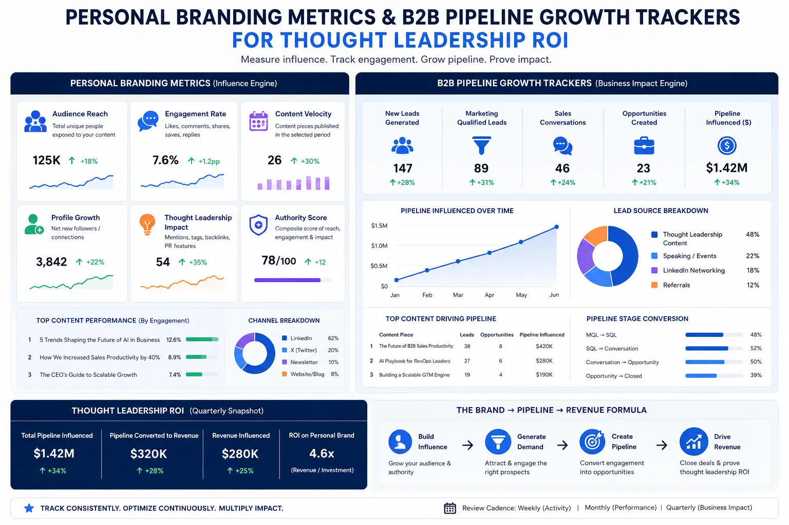
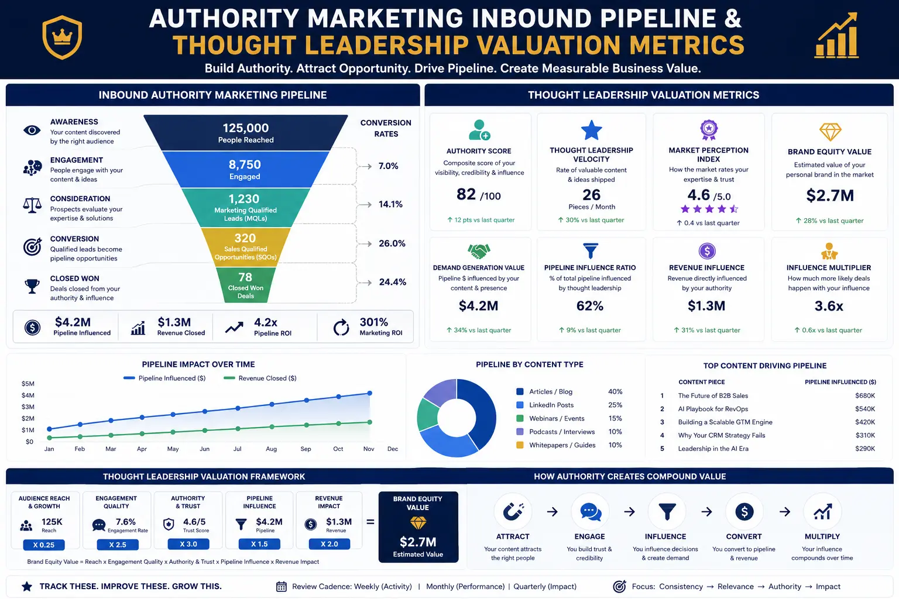

The Core Personal Brand Metrics That Predict Consistent Business Pipeline Expansion
Why Most Personal Brands Fail to Generate Measurable Business Results
Every executive, founder, and professional services leader understands intuitively that a strong personal brand creates business opportunities. The challenge is not awareness of the value — it is the absence of structured measurement. Most personal branding efforts operate in a measurement vacuum: content is published, speaking engagements are accepted, media appearances are secured — but the commercial impact of these activities is never quantified, tracked, or optimised against actual pipeline outcomes.
This is where Personal Branding Metrics become the critical differentiator between personal brands that generate consistent commercial outcomes and those that remain expensive vanity exercises. The executives who treat personal branding as a measurable business development channel — tracking specific indicators, attributing pipeline movement to brand activities, and optimising based on data — consistently outperform those who rely on intuition and anecdotal feedback to assess their brand's effectiveness.
Measuring personal brand impact is not about tracking follower counts, post impressions, or engagement rates in isolation. These are activity metrics — they tell you that something is happening, but they do not tell you whether that activity is producing commercial results. The metrics that predict consistent business pipeline expansion are the ones that connect personal brand visibility to qualified inbound enquiries, deal velocity, conversion rates, and revenue attribution. Understanding and implementing B2B pipeline growth trackers that link personal brand activity to commercial outcomes is the foundation of every successful executive branding programme.
The Four Metric Categories That Predict Pipeline Expansion
Tracking Thought Leadership ROI requires a structured framework that organises personal brand metrics into four distinct categories — each measuring a different stage of the pipeline generation process. Without this structured approach, executives either measure the wrong things or fail to connect their brand activities to downstream commercial outcomes. Effective thought leadership valuation depends on understanding how each metric category contributes to the overall pipeline generation engine.
- Awareness metrics measure the reach and visibility of your personal brand — how many people in your target market are exposed to your content, know your name, and recognise your area of expertise. The most reliable awareness metric is Google search volume for your name — the number of people who search specifically for you by name each month. This metric matters because branded search is an intent signal: someone searching for you by name has already encountered your content, heard you speak, or received a referral. It is the purest measure of personal brand awareness available.
- Engagement metrics measure the depth of interaction between your audience and your thought leadership content — not superficial likes and shares, but meaningful engagement indicators: content save rates, newsletter subscription rates from content, repeat website visits from the same users, LinkedIn connection request rates following content publication, and direct message volume triggered by specific content pieces.
- Pipeline attribution metrics measure the direct contribution of personal brand activities to qualified pipeline generation — the number of inbound enquiries that reference your content, speaking appearances, or personal brand as the discovery mechanism. Building an effective Authority Marketing Inbound Pipeline requires tracking these attribution points systematically through CRM tagging, lead source surveys, and first-touch attribution models.
- Commercial impact metrics measure the downstream revenue impact of personal brand-generated leads — comparing the conversion rates, average deal sizes, sales cycle lengths, and lifetime values of leads who engaged with your thought leadership content before entering the pipeline against those who did not. These are the metrics that ultimately determine the commercial ROI of personal branding investment.
Branded Search Volume
Tracking Google search volume for your name provides the clearest indicator of personal brand awareness growth — measuring how frequently your target market actively searches for you by name, indicating prior exposure to your content, speaking, or referrals.
Inbound Pipeline Attribution
Building an effective Authority Marketing Inbound Pipeline requires systematic tracking of every inbound lead that references your personal brand, thought leadership content, or speaking appearances as their discovery mechanism.
Lead Quality Differentials
Measuring personal brand impact on lead quality involves comparing conversion rates, deal sizes, and sales cycle lengths between brand-attributed leads and non-brand-attributed leads — revealing the true commercial premium personal branding generates.
Outbound Velocity Enhancement
Analyzing outbound lead velocity reveals how personal brand visibility accelerates outbound sales performance — measuring the response rate, meeting acceptance rate, and deal progression speed when prospects have pre-existing awareness of the executive's brand.

Tracking Thought Leadership ROI Through Multi-Layer Attribution
The most significant challenge in Tracking Thought Leadership ROI is attribution — connecting a piece of content published on LinkedIn, a keynote delivered at an industry conference, or a media interview to a specific commercial outcome weeks or months later. Traditional marketing attribution models struggle with personal branding because the influence path is often indirect: a prospect reads three articles, sees a conference talk clip, receives a referral from a colleague who follows the executive's content, and then makes an inbound enquiry — but only mentions the referral as their discovery source.
Effective thought leadership valuation requires a multi-layer attribution framework that captures both direct and assisted attribution:
- Direct attribution captures leads who explicitly identify the executive's personal brand as their discovery mechanism — mentioning specific content pieces, speaking appearances, social media profiles, or media coverage in their initial enquiry. This is captured through structured lead source questions in CRM intake forms, sales discovery call scripts, and post-meeting feedback surveys.
- Assisted attribution captures the pre-pipeline influence of personal brand content on leads who enter through other channels. By integrating LinkedIn analytics with CRM data, tracking website visitor behaviour through UTM parameters, and monitoring content engagement signals before pipeline entry, you can identify prospects who consumed thought leadership content before making contact — even if they do not explicitly attribute their discovery to the personal brand.
- Authority indicator tracking measures the secondary signals that indicate growing brand authority — Google search volume for your name, speaking invitation frequency, media mention rate, industry award nominations, and the quality and seniority of inbound connection requests. These indicators do not directly generate pipeline, but they are leading indicators that predict pipeline growth 60-90 days ahead.
- Pipeline quality comparison provides the most compelling ROI evidence by comparing key commercial metrics between brand-attributed and non-brand-attributed leads. When brand-attributed leads convert at 2-3x the rate, close 30-40% faster, and generate 25-50% larger average deal sizes, the commercial case for sustained personal branding investment becomes undeniable. Using conversion rate optimization visuals to present this data to stakeholders transforms abstract brand value into concrete commercial evidence.
Building Your Authority Marketing Inbound Pipeline
An Authority Marketing Inbound Pipeline is fundamentally different from a traditional inbound marketing pipeline. In a traditional inbound model, leads are attracted by content that addresses their problems — blog posts, guides, webinars, and lead magnets that capture contact information in exchange for educational content. In an authority marketing model, leads are attracted not by the content alone, but by the person behind the content — the executive whose name, perspective, and demonstrated expertise create trust before any sales conversation begins.
The practical difference is significant: Authority Marketing Inbound Pipeline leads arrive pre-qualified. They have consumed enough of the executive's content to understand their methodology, agree with their perspective, and recognise their expertise. They are not comparing five providers — they are contacting the one provider whose thought leadership has already convinced them. This is why Personal Branding Metrics consistently show that authority-attributed leads convert at dramatically higher rates, tolerate premium pricing, and progress through the sales process with significantly less resistance.
Implementing B2B pipeline growth trackers for authority marketing requires measuring five key indicators: first, the volume of inbound enquiries that reference the executive's content or reputation as the primary discovery mechanism; second, the percentage of total pipeline that is attributable to personal brand activities; third, the conversion rate differential between authority-attributed and non-attributed leads; fourth, the average deal size comparison between the two cohorts; and fifth, the sales cycle length comparison that quantifies the trust acceleration effect of pre-pipeline content engagement.
Direct Attribution Tracking
- Implement structured lead source questions in every CRM intake form that specifically ask how the prospect discovered you.
- Train sales development representatives to probe for content consumption history during discovery calls.
- Tag all personal brand-attributed leads in your CRM with a dedicated source category for pipeline reporting.
- Track which specific content pieces, speaking engagements, or media appearances generate the highest volume of direct attribution mentions.
Assisted Attribution Analytics
- Integrate LinkedIn analytics with your CRM to identify prospects who viewed the executive's profile or engaged with content before entering the pipeline.
- Deploy UTM-tagged links on all thought leadership content to track website visits originating from personal brand channels.
- Monitor the content consumption patterns of closed-won deals to identify the most influential content assets in the conversion journey.
- Build conversion rate optimization visuals dashboards that display attribution data in real-time for ongoing optimisation.
Outbound Velocity Measurement
- Compare outbound email response rates when the executive's personal brand is referenced versus generic company outreach.
- Measure meeting acceptance rates for prospects who have prior personal brand engagement versus cold prospects.
- Track deal progression velocity to quantify how personal brand pre-awareness accelerates the outbound sales cycle.
- Apply analyzing outbound lead velocity frameworks to isolate the specific impact of brand familiarity on outbound conversion performance.

Measuring Google Search Volume for Your Name as a Leading Indicator
Among all Personal Branding Metrics, branded search volume is uniquely valuable because it is a leading indicator — it predicts pipeline growth before the pipeline materialises. When more people search for an executive by name, it means more people in the market have encountered the executive's content, heard them speak, or received a referral. These awareness events precede inbound enquiries by weeks or months, making Google search volume for your name the earliest signal that personal brand activities are working.
Measuring branded search volume involves three complementary tools: Google Search Console provides exact data on how frequently your name appears in search results and generates clicks to your website; Google Trends provides relative search interest over time, allowing you to identify trend lines and correlate search volume spikes with specific content publications or speaking appearances; and third-party tools like SEMrush or Ahrefs provide estimated monthly search volumes that benchmark your branded search against competitors. Tracking this metric monthly and correlating changes with specific brand-building activities provides the feedback loop needed to identify which activities produce the strongest awareness results.
Conversion Rate Optimisation and Visual Pipeline Reporting
The data generated by personal brand attribution tracking is only valuable if it is presented in a format that drives decision-making. Conversion rate optimization visuals transform raw attribution data into clear, compelling visual reports that communicate the commercial impact of personal branding investment to stakeholders, board members, and internal teams. The most effective visual pipeline reports include side-by-side conversion funnel comparisons showing brand-attributed versus non-attributed lead performance, trend lines showing Google search volume for your name correlated with inbound enquiry volume, deal velocity waterfall charts showing the sales cycle acceleration effect of pre-pipeline content engagement, and revenue attribution pie charts showing the percentage of closed-won revenue traceable to personal brand activities.
Building B2B pipeline growth trackers that incorporate these visual elements ensures that personal branding investment is evaluated with the same rigour as any other business development channel. When the data consistently shows that authority-attributed leads convert at higher rates, generate larger deals, and close faster than non-attributed leads, the investment case for sustained personal brand development becomes self-evident.
Analyzing Outbound Lead Velocity and the Brand Halo Effect
One of the most underappreciated dimensions of Tracking Thought Leadership ROI is the impact of personal brand visibility on outbound sales performance. Most executives track personal branding's impact on inbound pipeline only — but the brand halo effect on outbound performance is often equally significant. Analyzing outbound lead velocity involves measuring how personal brand familiarity affects the performance of outbound sales activities: cold email response rates, LinkedIn outreach acceptance rates, meeting booking rates, and proposal-to-close ratios.
The mechanism is straightforward: when an outbound prospect receives a sales email or LinkedIn message from an executive whose name they recognise — because they have seen their content, heard their name at a conference, or encountered their media coverage — the response rate is dramatically higher than when the executive is completely unknown. This is the brand halo effect on outbound sales, and analyzing outbound lead velocity provides the data to quantify it. Companies that track this metric typically find that outbound campaigns that leverage a recognised personal brand generate 3-5x higher response rates and 40-60% shorter sales cycles than campaigns without brand recognition support.
Thought Leadership Valuation: Calculating the Financial Value of Your Personal Brand
Thought leadership valuation is the process of calculating the total financial value that an executive's personal brand contributes to the business — expressed in terms of pipeline generated, revenue attributed, cost-per-lead reduction, and customer acquisition cost savings. This valuation model compares the total investment in personal branding activities — content production, speaking engagement preparation, media training, visual content creation, and platform management — against the total commercial value of opportunities generated through personal brand attribution.
Measuring personal brand impact through a structured valuation model typically reveals that personal branding delivers a significantly lower cost-per-qualified-lead than paid advertising, outbound sales programmes, or traditional inbound marketing — because the content investment compounds over time. A LinkedIn article published today continues generating views, engagement, and inbound enquiries for months or years, while a paid advertising campaign stops generating results the moment the budget is paused. This compounding effect is the core of thought leadership valuation — the recognition that personal brand investment builds an appreciating asset rather than a depreciating expense.
Conclusion: Building a Metrics-Driven Personal Brand Strategy
The executives and founders who generate consistent business pipeline from their personal brands are not necessarily the most charismatic, the most prolific content publishers, or the most well-connected in their industries. They are the ones who treat personal branding as a measurable business development channel — implementing structured Personal Branding Metrics, building systematic Authority Marketing Inbound Pipeline attribution, and using data to optimise their brand investment continuously.
Tracking Thought Leadership ROI is not optional — it is the mechanism that transforms personal branding from an intangible, faith-based activity into a data-driven business development asset. By measuring Google search volume for your name, building conversion rate optimization visuals that communicate pipeline impact, deploying B2B pipeline growth trackers that quantify authority attribution, and analyzing outbound lead velocity to capture the brand halo effect — executives can finally demonstrate the exact commercial return their personal brand generates.
At The PhD Ads, we help executives and founders build measurable personal brands that generate consistent business pipeline — combining visual content production, strategic content architecture, and structured thought leadership valuation frameworks that quantify the commercial impact of every brand-building activity. Measuring personal brand impact is not guesswork — it is a discipline, and we build the systems that make it precise, actionable, and commercially compelling.
Key Topics
Ready to Measure and Maximise the Commercial Impact of Your Personal Brand?
At The PhD Ads in Madurai, we build metrics-driven personal branding systems — combining visual content production, structured pipeline attribution, and thought leadership valuation frameworks that quantify every aspect of your personal brand's commercial impact.
Email: team@e2o.in